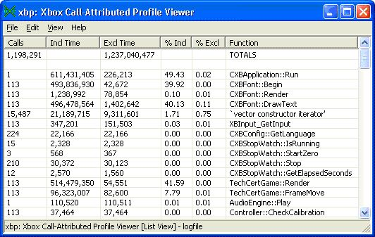
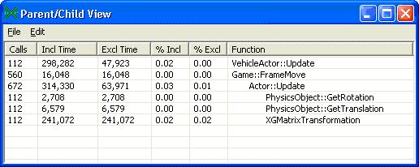
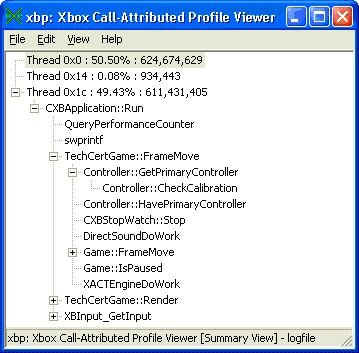

The Xbox Call-Attributed Profile Viewer (XbPerfView) is a graphical tool for analyzing CPU profiling data. It can be used to locate the CPU bottlenecks in your title, and to understand why those bottlenecks occur.
USAGE: xbperfview [-s symbolpath] [logfile]
Logfiles can be generated using the Xbox Call-Attributed Profiler (XbPerf) or by adding calls to DmStartProfiling and DmStopProfiling in your title. In addition to using the command line, it's possible to open a logfile by choosing Open from the File menu.
When you open a logfile, XbPerfView tries to resolve symbols for all function addresses encountered in the logfile. The tool uses the symbol path specified on the command line, or else the current directory if no symbol path is given. To view or change the symbol path when XbPerfView is running, select Set Symbol Path from the Edit menu. Or, you can press Ctrl+Y. If you set the symbol path to an empty string, XbPerfView reverts to searching the current directory. In the Set Symbol Path dialog box, click OK to set the symbol path for future logfiles, or click Resolve Symbols to set the path and search for symbols to apply to the current logfile.
Three view modes are available for browsing logfiles in XbPerfView: Function List, Thread Summary, and Execution List. These view modes are explained below in more detail, together with some other features that XbPerfView provides.
This is the default view that XbPerfView displays when opening a logfile. It displays a set of statistics for each function that was called during the profiling run. To switch from another view to the Function List view, select Function List from the View menu. Or you can press Ctrl+U.
Here is an example of what this view might look like:

Note Many more columns are available in XbPerfView than are pictured here (see below):
Each row represents a function, and each column displays a piece of information about that function. Many statistics can be displayed in the Function List view. To show new columns or hide existing ones, from the Edit menu, select Choose Columns. Or you can press Ctrl+M.
You can sort on a particular column by clicking on that column's heading. Clicking the heading multiple times will toggle between ascending and descending sort order. You can change the order of the columns by dragging and dropping the column headings.
The following table describes the available columns:
| Column | Description |
|---|---|
| Calls | Number of calls made to a particular function |
| % Inclusive | Percentage of time spent in a particular function, including time spent in its children |
| % Exclusive | Percentage of time spent in a particular function, excluding time spent in its children |
| Function | Name of the function |
| Module | Module containing the function |
| Inclusive Cycles | Total CPU cycles spent in function, including children |
| Exclusive Cycles | Total CPU cycles spent in function, excluding children |
| Inclusive Cycles / Call | Number of CPU cycles (inclusive) per each call to function |
| Exclusive Cycles / Call | Number of CPU cycles (exclusive) per each call to function |
| Min % Inclusive | Minimum amount of time (inclusive) spent in a single call to function, expressed as percentage of total time |
| Max % Inclusive | Similar to Min % Inclusive, but expresses the maximum inclusive time |
| Min % Exclusive | Similar to Min % Inclusive, but expresses the minimum exclusive time |
| Max % Exclusive | Similar to Min % Inclusive, but expresses the maximum exclusive time |
| Divided Calls | Number of calls to function, divided by user-specified divisor |
| Divided Inclusive Cycles | Total CPU cycles (inclusive) spent in function, divided by user-specified divisor |
| Divided Exclusive Cycles | Total CPU cycles (exclusive) spent in function, divided by user-specified divisor |
| Comments | List of comments about function |
Note To set the denominator for the Divided columns, select the Set Denominator option from the Edit menu. Or you can press Ctrl+D. One use for the Divided columns is to display per-frame statistics: Simply set the denominator to the number of frames displayed during the profiling run, which is usually equal to the number of calls to D3DDevice_Swap.
Note The Comments column displays abbreviated information. For a detailed explanation of each abbreviated comment, from the Help menu, select Explain Comments.
For a given function, XbPerfView can display information about all the functions that it called (its children) and all the functions that it was called by (its parents). To display the Parent/Child window for a function, select the function in any window (including another Parent/Child window), and then choose the Expand Function command from the Edit menu. Or you can press Ctrl+E. Alternatively, in most windows you can simply double-click on the function.
Here is an example of a Parent/Child window:

In this Parent/Child window, the user has expanded the function Actor::Update. The statistics in that row are the aggregate stats for Actor::Update across all calls to it. Above that row are all the functions that called Actor::Update (its parents) and the statistics for Actor::Update when called by that parent. Below Actor::Update are all the functions that it called (its children) and the statistics for each child when called by Actor::Update. Hovering your mouse over a row will briefly pop up a reminder about what that row's statistics refer to.
The columns displayed in the Parent/Child window are identical to those displayed in the Function List view. If you want to display different columns in the Parent/Child windows, change the columns in the Function List view before opening a Parent/Child window. Columns can be sorted as in the Function List view, but note that all parents will stay above the expanded function and all children will stay below it.
To close all Parent/Child windows at once, select Close Parent/Child Windows from the main window's Edit menu. Or you can press Ctrl+W.
The Thread Summary view displays a list of all threads in the title. Next to the name of each thread is the percentage of total time spent in that thread, plus the number of cycles spent in that thread during the profiling run. You can expand the tree view at each thread to see what top-level functions were executed in that thread. Furthermore, you can expand each function to see what other functions it called, until you reach functions with no children.
To display the Thread Summary view, select Thread Summary from the View menu. Or you can press Ctrl+T. Here is an example of this view:

Note In this example, thread 0x1c was the only thread that called any functions.
The Execution List view displays a chronological list of function calls and thread switches that occurred in each thread during the profiling run. For each function, the Execution List view lists the depth in the call stack and the time at which the function was called (in CPU cycles, relative to zero, the start of the profiling run).
To display the Execution List view, select Execution List from the View menu. Or you can press Ctrl+I.
You can search the current view for a given string in the function names. To do this, select Find from the Edit menu. Or you can press Ctrl+F.
Note You cannot search Parent/Child windows.
The Hide/Show Incomplete Calls command on the Edit menu can be useful for displaying only complete frames of profiling data. An incomplete function call is one where the profiler records a call into a function but records no call out (or vice versa).
Note Incomplete calls will typically only occur at the start and end of the profiling run.
By default, XbPerfView does not ignore incomplete function calls. But if you hide incomplete calls, XbPerfView reparses the logfile and only considers complete frames of data for each thread. A complete frame of data begins the first time the highest level function in a thread calls another function, and it ends the last time execution returns to that highest level. By considering only complete frames, you can sometimes reduce your chances of seeing skewed profile data.Xbox Call-Attributed Profiler (XbPerf) | DmStartProfiling, DmStopProfiling